Offline speech-to-text for Linux.
Press a key and talk. Your words show up while you're still speaking. Press it again, and everything you said is on your clipboard, ready to paste anywhere.
curl -fsSL https://raw.githubusercontent.com/IamAlexandros/0type/main/install.sh | sh
One command installs 0type and its speech model, with no sudo. Free, open source, and nothing leaves your computer.
This is 0type. Click the bar to play it again.
How it works
- Press your shortcut
A small bar appears at the bottom of your screen.
- Talk
Words appear as you say them, not after you stop.
- Press it again
The bar disappears, and everything you said is on your clipboard.
Forty themes
Open the menu, choose Theme, and flick through them. Each one applies instantly. They change more than colors: the Game Boy says READY, DOS answers with “1 file(s) copied.”, and the Tamagotchi has a creature living in it. Or write your own in a single CSS file.
-
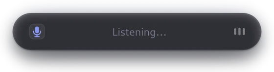
Default -
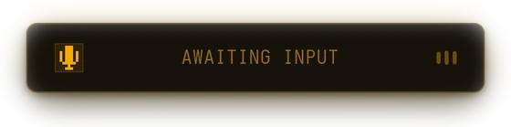
Amber CRT -
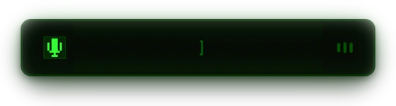
Apple II -
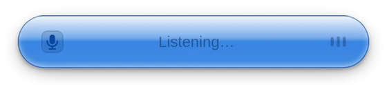
Aqua -
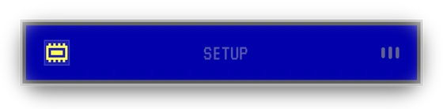
BIOS setup -
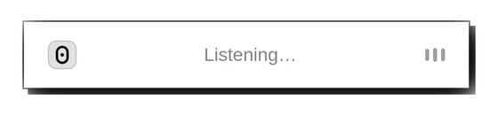
Classic Mac -
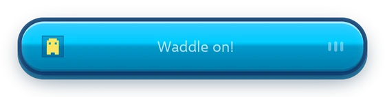
Club Penguin -
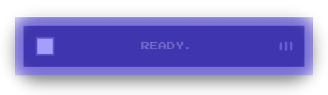
Commodore 64 -
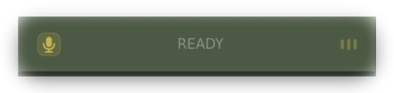
Counter-Strike 1.6 -
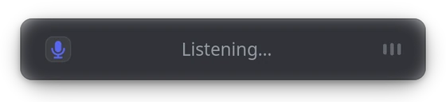
Discord -
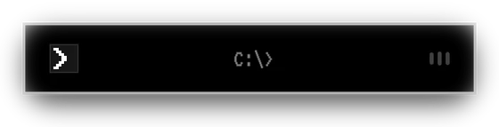
DOS -
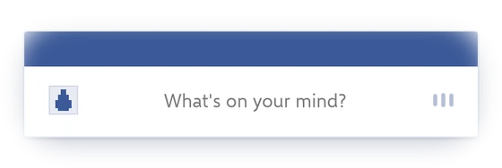
Facebook 2008 -
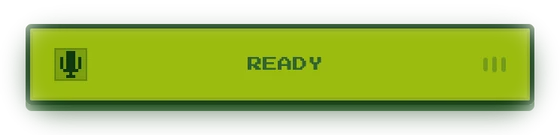
Game Boy -
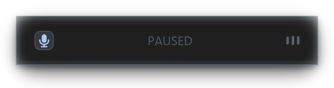
GTA San Andreas -
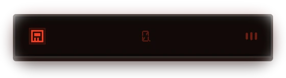
LED calculator -
Light -
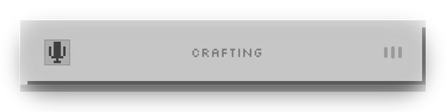
Minecraft -
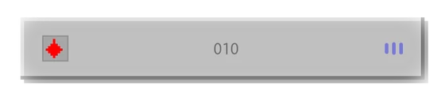
Minesweeper -
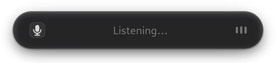
Mono -
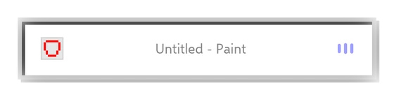
MS Paint -
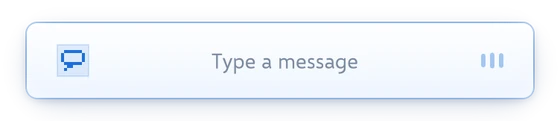
MSN Messenger -
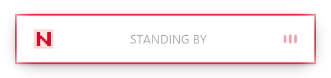
NASA worm -
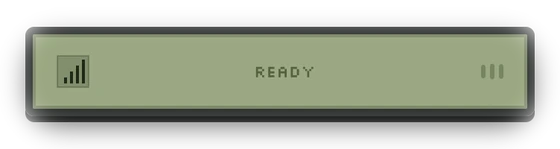
Nokia 3310 -
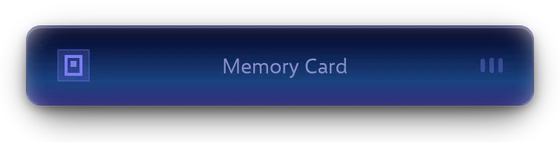
PlayStation -
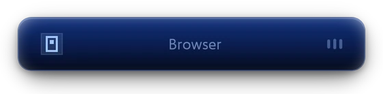
PlayStation 2 -
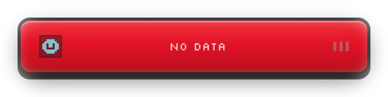
Pokédex -
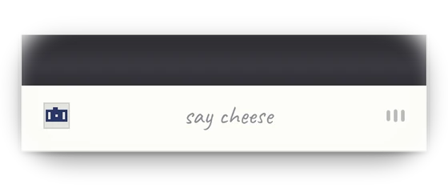
Polaroid -
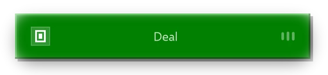
Solitaire -
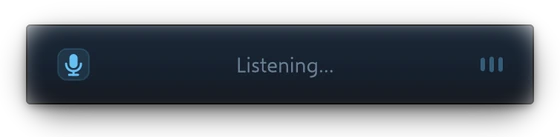
Steam -
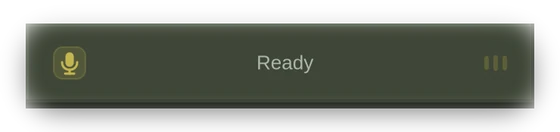
Steam classic -
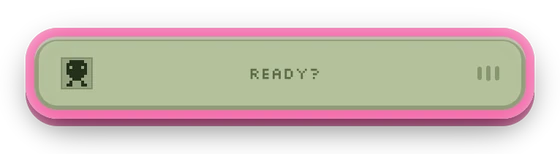
Tamagotchi -
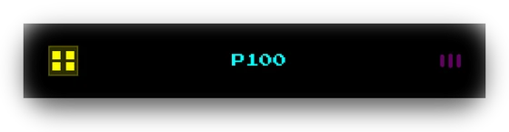
Teletext -
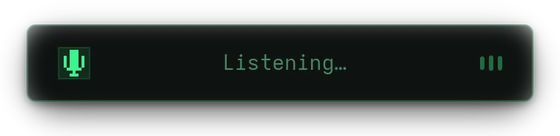
Terminal -
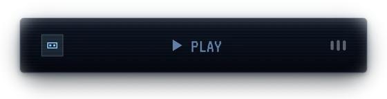
VHS -
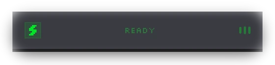
Winamp -
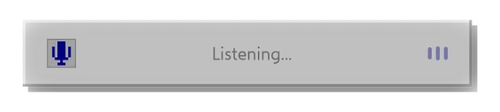
Windows 98 -
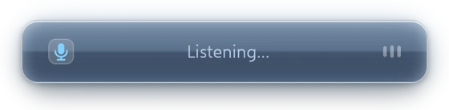
Windows Vista -
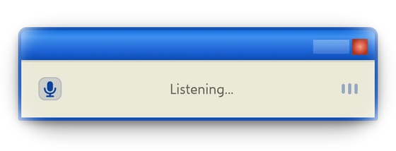
Windows XP -
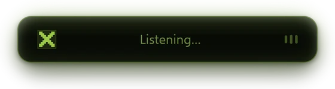
Xbox -
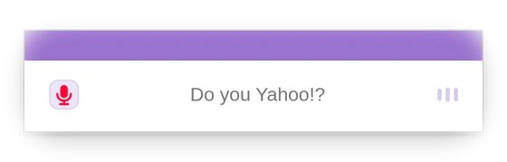
Yahoo!
Works on your desktop
0type runs on Wayland and X11. You can bind it to a key on GNOME, KDE Plasma, Hyprland, Sway, i3, XFCE and Cinnamon, and the setup steps for each are in the README.
Speech recognition uses NVIDIA’s Parakeet model through ONNX Runtime, on your CPU. There’s no Python to install and no GPU needed.
Questions
- Does it work offline?
- Yes, always. The speech model lives on your disk and nothing you say is ever sent anywhere.
- What does it need?
- A Linux desktop with GTK4 and ALSA, which is almost any of them. It works on Wayland and X11.
- Does it need a GPU?
- No. It runs on your CPU, and words appear about a second behind you.
- How big is it?
- The program is about 10 MB. The speech model is about 650 MB and downloads once, during install.
- Is it free?
- Yes. 0type is free and open source under the MIT license.